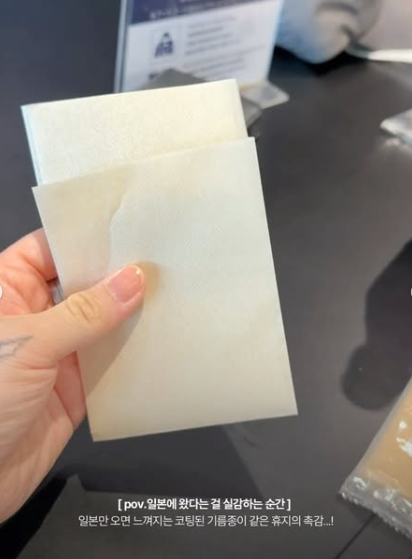
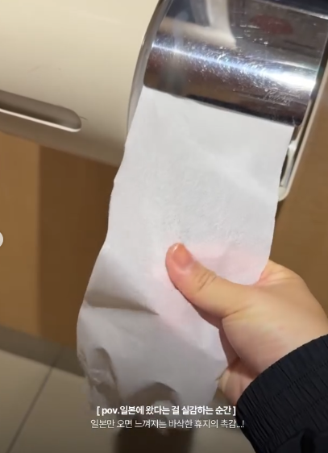

공용화장실 휴지랑 냅킨 차원달라


공용화장실 휴지랑 냅킨 차원달라
변기..물 차워닝달라...맨날 변기에 똥이..
한국은 휴지 질이 좋아서 변기가 막힌다는 생각 많이 함 ㅋㅋ
일본 배관이 달라서 n겹휴지 쉽지않을걸
무슨 우리나라 옛날 한장씩 뜯어쓰는 달력 재질인줄
종이빨대 안쓰는거, 맥주, 과자, 아이스크림, 우유, 놀이동산 차원이달라
저걸로 똥이 닦임? 긁어내야하능거아님?
일본에서 화장실 갔을때 여직원이 상주하고 있더라... 신기했음
여직원이 닦아줘요?
아! 그래서 히토미에 육변기물이 있는거구나!
종이조아
일본가서 휴지 방향이랑 덮개의 용도를 알았지
쟤는 똥꼬를 물로 씻잖아, 휴지는 그냥 그 남은 물기를 닦는걸로 알고 있음, 비대 보급율이 엄첨 높은걸로 알고 있음
일본 양주가격 차원이달라
진짜달라
존나싸...
저긴 마스크도 그렇고 예전에 골판지 침대도 그렇고 이상하게 특정분야에 개병신같은게 있는듯
우리나라에도 다른건 다 안가져가지만 자전거만큼은..
차원이 다르게 ㅈ같긴하지 ㅋㅋㅋ
일본 택시비 차원이 달라....
화장실에 앵간하면 다 비데 설치되어있으니 그런거 같음.
근데 여행 그렇게 많이 갔는디 저런 종이 재질은 못본거 같은데 ..
골판지로 등쳐먹느라 존나 아끼나보네